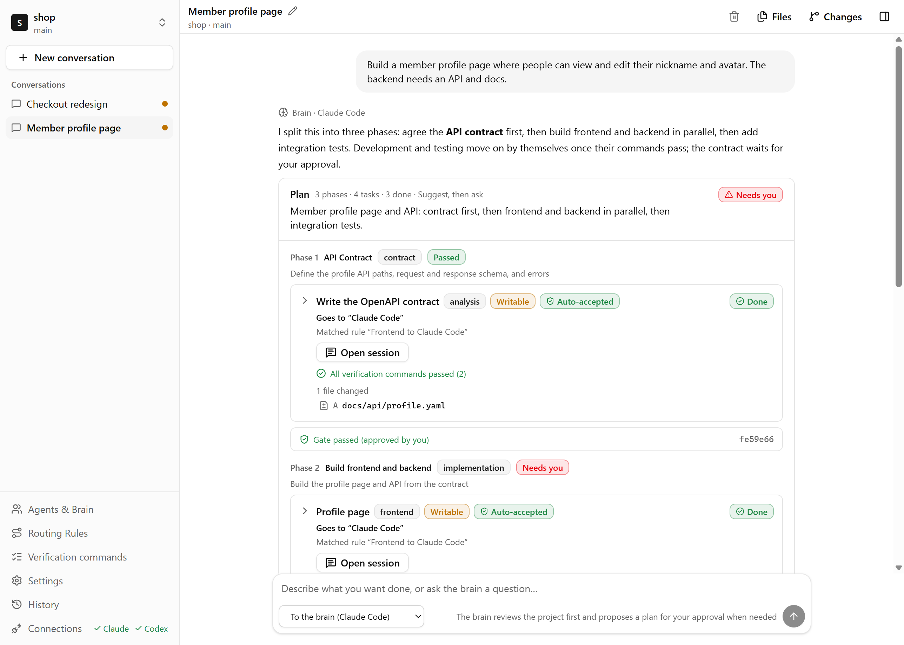
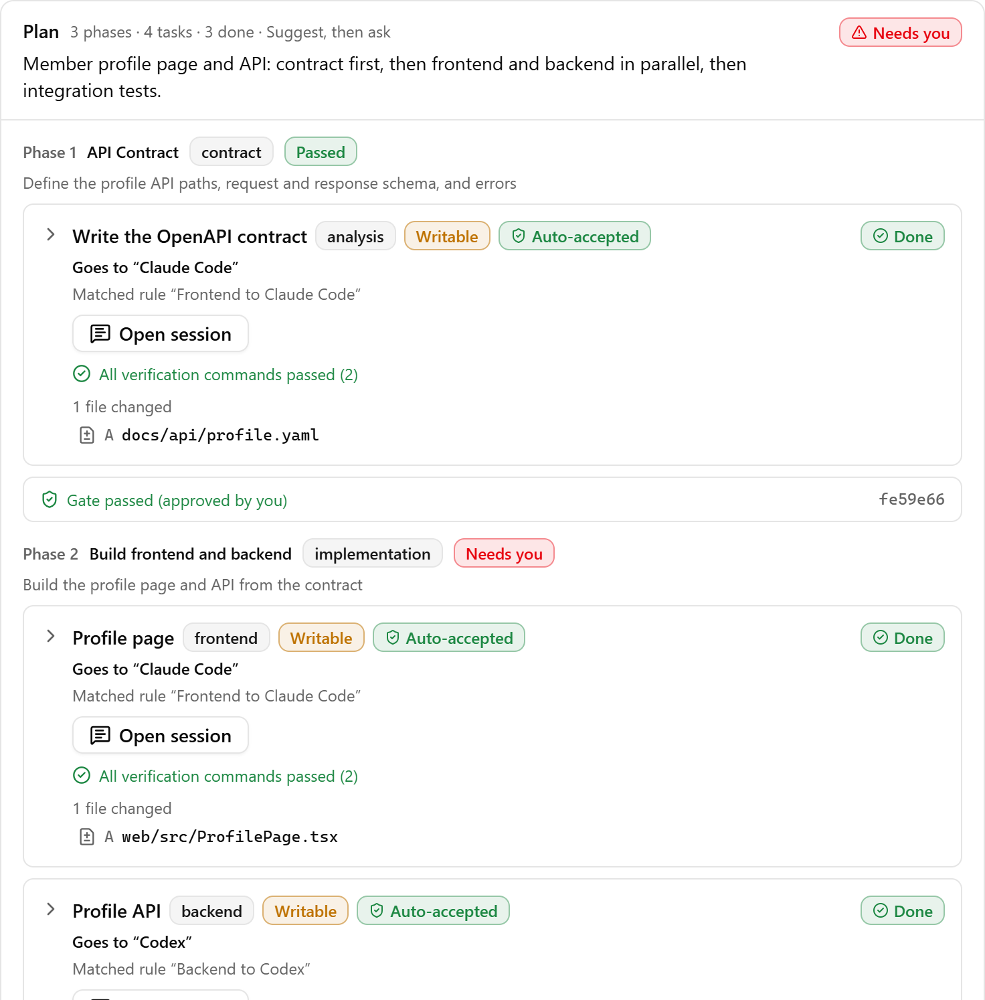
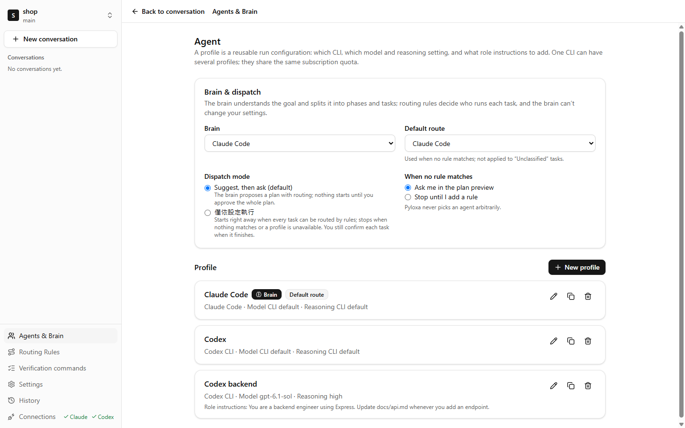
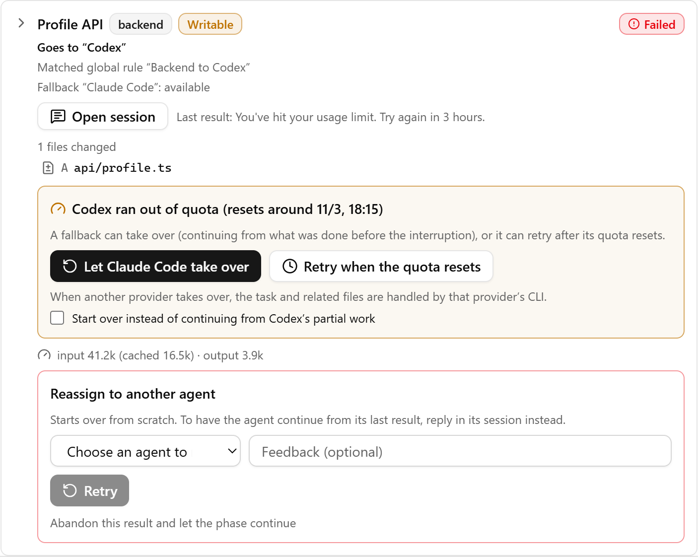
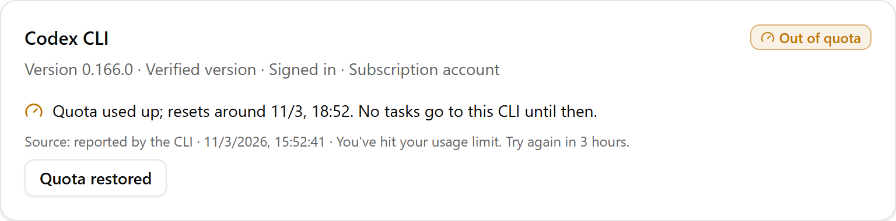

One chat.
Many agents.
Describe the work once. Pyloxa plans it, hands each task to Claude Code or Codex on your own subscription, and checks the result before anything is merged.
These are Pyloxa’s example rules. You write your own, and every task shows the rule it matched.
Every result is checked
Working
Verified
Integrated
More than more agents
Plenty of tools let you run several agents side by side. Pyloxa handles what happens between them: who does which part, how you know it is done, and who takes over when one gets stuck.
Here is the same request three ways: switching between CLIs yourself, putting several agent terminals side by side in a terminal multiplexer, and handing it to Pyloxa.
| Switching CLIs yourself | Terminal multiplexer | With Pyloxa | |
|---|---|---|---|
| Splitting the work | You decide which tool fits each part and paste the request over. | You decide what the agent in each terminal does; some tools also let an agent start helper agents. | The brain breaks the request into phases and tasks and routes each one by your rules, naming the rule it matched. |
| Handoffs | When one agent finishes, you paste the API shape and file paths into the next. | Agents can message each other; what gets handed over is up to the agents. | The next phase receives a handoff package: the results, the checks that passed, and what to watch for. |
| Done means | The agent says it is done, and you run the tests to find out. | You see which agents are working, done or waiting for you; whether the result is right is still yours to check. | A task is done when your verification commands pass in its own worktree. If they fail, the agent gets one automatic fix. You can also have a different agent write tests for it and the brain review it; the brain's verdict is labelled as an AI review. |
| Out of quota | You switch tools and explain again where things stand. | That terminal stops and waits; arranging a takeover is up to you. | Pyloxa proposes the fallback from your rules; once you confirm, it continues from the files the first agent changed. |
| Your repo | The agent edits your working directory directly. | Depends on how you open the terminal; usually your working directory. | Every task works in its own git worktree, and its changes are checked against the allowed write scope. Merging and pushing stay your call. |
| Best for | One thing at a time. | Watching many terminals at once, keeping agents running even after you quit the app, or working on remote machines. | Splitting one request across agents and checking the results before they are merged. |
How it works
First, say what you want.

Then approve the plan.

Finally, merge what passed.
- Adocs/api/profile.yaml
- Aserver/src/routes/profile.ts
- Aweb/src/pages/Profile.tsx
- Atest/profile.test.ts
- Atest/contract.test.ts
Split the work your way
Which models to use, which work goes to whom, and when Pyloxa should stop and ask are all your settings. The brain only proposes plans; it cannot change any of them.
Every agent is a profile you set up
A profile picks the CLI, the model, the reasoning level, and a role prompt added to every task. One CLI can have several, such as "Claude frontend" and "Claude docs".
- The model list comes straight from the CLI you installed. Reasoning shows each CLI's own values (Claude Code's
--effort, Codex'smodel_reasoning_effort) rather than a made-up common scale. - Any profile can be the brain that reads the project and writes the plan, and the brain can use a different model from the agents doing the work.
- Profiles store settings only, never credentials.
Your rules decide who does what
Rules match on phase type and task type, for example "backend work in the implementation phase goes to Codex backend". Each rule has a primary profile and a fallback order, and applies to every project or just the current one.
- Rules are checked top to bottom and the first full match wins. Pyloxa warns you when one rule hides another.
- Rule simulation calls no agent and uses no quota: pick a kind of task and see who gets it and why.
- When nothing matches, Pyloxa asks you in the plan preview or stops, as you choose. It never picks an agent at random.
Every phase is checked with your commands
The brain lays out phases to fit the request, such as specification, contract, implementation and testing. Before you approve, you can reassign a task, edit its instructions, or ask the brain to revise.
- Verification commands such as
npm run testneed your approval, and you can try them first in a temporary worktree. The brain can only use commands you approved. - Each finished task is checked in its own worktree; at the end of each phase, the gate runs again on the integrated result.
- A gate can move on by itself once it passes, or wait for your approval.
- Hand a finished task to a different agent to test it, for example Codex builds and Claude Code writes the tests. The tester can change only test files, and Pyloxa reruns your commands on the result.
- The brain can review finished work, with its own model and thinking effort. Its verdict is labelled as an AI review, and a task that asks for your review still waits for you.
You decide how much to let go
The routing mode decides when Pyloxa asks you first. In every mode, pushing and deploying never happen on their own.
- The brain and the working agents are set up separately; a working agent running out of quota never replaces the brain.
- Each task gets at most 3 automatic tries, and plans have limits on tasks and time, so nothing retries forever.

One set of skills for every agent
Claude Code reads ~/.claude/skills; Codex reads ~/.agents/skills. Keep a copy of the same skill in each, change one, and the other goes stale. Pyloxa manages them in one place.
- InventoryFreeSee which skills each CLI has, and which share a name but differ in content.
- SyncProUse
~/.agents/skillsas the library and sync it to every CLI. Files you changed on the CLI side are never overwritten without asking. - AssignProPick the skills each project uses; Claude Code and Codex can also take them per profile.
- Routing packsProBundle rules, skills, phases and verification commands to share. Imports show each item first and never replace your existing rules.
| Name | Claude Code | Codex | shop project |
|---|---|---|---|
| api-contract | Synced | Synced | In use |
| react-conventions | Synced | Differs | In use |
| release-notes | Missing | Synced | Not used |
| db-migration | Synced | Synced | Not used |
| test-writer | Synced | Synced | In use |
Mockup. The inventory is in the free version since 0.1.2; sync, assignment and routing packs are Pro and still in development.
When one runs dry
If Codex hits its usage limit halfway through a task, Pyloxa stops sending it work, shows when the quota resets, and offers the fallback from your rule. You confirm, and Claude Code continues from the files Codex already changed.


Run my tests on every task.
npm run test runs in each task’s own worktree. Pass, and the task is accepted for you; fail, and the agent gets one automatic fix.
Ask me before the next phase.
A phase passes its commands on the integrated version, then waits for one click from you. Leave it off and checked phases move on by themselves.
Never touch my credentials.
Pyloxa only runs the CLIs you signed in to. It never reads, copies or sends their tokens, and your working directory is never stashed or reset.
Reply in my language.
The interface and the agents’ replies in English, 繁體中文 or 简体中文, chosen separately.
Free runs one project with you. Pro looks after all of them.
The free version covers the whole flow: plan, route, check, merge. Pro takes over what you would otherwise do by hand: several projects at once, decisions within the limits you set, takeovers when quota runs out, and finished work sent to another agent for testing.
| Compare plans | Free$0 no account needed | Pro Early bird: US$49 the first yearUS$79 per year; if you stop, Pro keeps working on versions released while you paid |
|---|---|---|
| Projects at once | One project working at a time; switch any time | Several projects working at once, with one task-center inbox for everything waiting on you |
| Routing | Suggest then ask, or follow your settings only | Automatic within limits: chooses and retries within the agents, models and counts you allow, and pauses at any limit |
| When quota runs out | A fallback is proposed; you confirm each takeover | Automatic fallback chain with triggers and limits; with your prior OK, switches to API billing when a subscription runs out |
| Checks and tests | Verification commands, phase gates, brain review, and cross-testing by another agent when you ask | Automatic cross-testing by task type or the brain's judgment, with failed tests sent back for a fix |
| Quota scheduling | Tasks waiting on quota resume after the reset | Project priority, per-connection quotas, and plans scheduled for a set time or the next reset later update |
| Usage and reports | Usage for each run | A usage dashboard across projects, budget reservations, and per-project usage and time reports in Markdown or CSV later update |
| Notifications | Windows desktop notifications | Sent to your own Telegram bot, Discord or any webhook later update |
| Skills | Inventory of the skills each CLI can see | One skills library synced to every CLI, assigned per project or profile, and shared with your rules as routing packs later update |
| Brain | One brain, changeable any time | A backup brain that takes over planning when the main one is unavailable later update |
| Both versions | Claude Code, Codex CLI and Gemini CLI (experimental) · your own profiles and routing rules · verification commands and phase gates · a worktree per task · background running and resuming interrupted work · files, diffs, git and pull requests | |
| Download the free version | Early-bird sign-up opens soon. | |
Pro Early bird: US$49 the first year
US$79 per year; if you stop, Pro keeps working on versions released while you paid
At launch
- Several projects working at once, with one task-center inbox for everything waiting on you
- Automatic within limits: chooses and retries within the agents, models and counts you allow, and pauses at any limit
- Automatic fallback chain with triggers and limits; with your prior OK, switches to API billing when a subscription runs out
- Automatic cross-testing by task type or the brain's judgment, with failed tests sent back for a fix
Later updates
- Quota scheduling: Project priority, per-connection quotas, and plans scheduled for a set time or the next reset
- Usage and reports: A usage dashboard across projects, budget reservations, and per-project usage and time reports in Markdown or CSV
- Notifications: Sent to your own Telegram bot, Discord or any webhook
- Skills: One skills library synced to every CLI, assigned per project or profile, and shared with your rules as routing packs
- Brain: A backup brain that takes over planning when the main one is unavailable
Free
$0 no account needed
- One project working at a time
- Suggest then ask, or follow your settings
- You confirm each takeover when quota runs out
- Brain review and cross-testing when you ask
Both versions
Claude Code, Codex CLI and Gemini CLI (experimental) · your own profiles and routing rules · verification commands and phase gates · a worktree per task · background running and resuming interrupted work · files, diffs, git and pull requests
Download the free versionFeatures marked “later update” arrive after Pro launches, and subscribers get them as they ship. The free version stays free, and everything about safety and correctness is in it.
- Questions
-
No. Pyloxa runs the official CLIs you already set up (Claude Code, Codex CLI and, experimentally, Gemini CLI), so usage counts against your own subscription, or against your own API key if you choose one. Pyloxa never resells or proxies any AI service.
-
Windows 10 or 11 (64-bit), git, and at least one of Claude Code or Codex CLI, signed in. Gemini CLI is optional and experimental, and needs your own paid Gemini API key. With more than one CLI, the default flow splits the work and fallback becomes useful. Don't have them yet? On first launch, the setup wizard checks for git and Node.js, installs the CLIs with their official npm commands after you confirm, and walks you through sign-in and API keys.
-
Never. It checks sign-in status with each CLI’s own command and starts the CLI as you would. Tokens and credential files are not read, copied or sent.
-
Pyloxa itself has no server and collects no telemetry. Your code goes only where the CLIs send it, under Anthropic’s, OpenAI’s and Google’s terms. Pyloxa asks GitHub for the latest Pyloxa version and its CLI compatibility catalog at startup and every 12 hours, with no project or usage data; you can turn this off in Settings. Usage statistics are computed on your computer and never sent.
-
Agents work in separate git worktrees, away from the working directory you are editing, and Pyloxa never stashes, resets or checks it out. When a task finishes, its changed files are checked against the write scope the plan allows, and you can review each file in the built-in diff view. Nothing is merged or pushed until you choose to.
-
The free installer is not code-signed yet, so SmartScreen may say it protected your PC. Choose More info, then Run anyway. You can compare the installer’s SHA-256 with the one on the release page first.
-
Yes. Each profile has its own model and reasoning setting, listed from the CLI you installed; leave them empty to use the CLI's defaults. The brain and the working agents can use different models.
-
Yes. Write a routing rule, such as "testing-phase work goes to Claude Code", for every project or just this one. You can also reassign a single task before approving a plan. New installs start with a default flow: Claude Code for frontend and video, Codex for backend and images, Gemini for writing and docs. Change it any time.
-
Terminal multiplexers put several agent terminals in one window so you can see which are working and which are waiting for you; some keep agents running even after you quit the app or reach remote machines. Pyloxa handles what happens outside the terminals: the brain splits the request into tasks, your rules route them, your commands check the results, a fallback is proposed when quota runs out, and you merge at the end. Pyloxa keeps working in the system tray when you close its window, and tasks interrupted by a restart can be resumed. If you want to watch every terminal yourself, a multiplexer fits; if you want to hand over a request and get checked results back, Pyloxa fits.
-
Running the CLI directly is fine, and Pyloxa uses the same CLI and the same subscription. The difference is three things: when quota runs out, Pyloxa proposes a fallback from your rules and, once you confirm, another CLI continues from the files already changed; an agent saying it is done does not count until your verification commands pass; and routing rules plus the skills each CLI can see are in one place instead of in each CLI's own settings.
-
Subagents split work inside one CLI. Pyloxa splits work across CLIs: tasks can go to different CLIs, each runs in its own worktree, your commands check the results, and another CLI takes over when one runs out of quota. You can use both together.
-
Since 0.1.2, Gemini CLI is supported as an experimental option with your own paid Gemini API key. Google account sign-in and AI Pro or Ultra subscriptions are not supported. Gemini can run tasks such as writing and docs but can’t be the brain or test another agent’s work, and in unattended mode it can edit files but not run commands. Other agents are being evaluated.
-
The inventory is in the free version since 0.1.2: the Skills page lists the skills each CLI can read and flags skills that share a name but differ in content. Sync, per-project or per-profile assignment and routing packs are Pro and still in development; watch the release notes for the date.
-
Several projects working at once with one inbox, automatic mode, automatic cross-testing by task type, an automatic fallback chain, and later quota scheduling and a shared skills library. Pro is US$79 a year. If you stop, Pro keeps working on every version released while you subscribed. Leave your email in the plans table for the early-bird price: US$49 the first year, then US$59 a year. The free version stays free.
No. Pyloxa runs the official CLIs you already set up (Claude Code, Codex CLI and, experimentally, Gemini CLI), so usage counts against your own subscription, or against your own API key if you choose one. Pyloxa never resells or proxies any AI service.
Say it once.
Install Pyloxa, open a project folder and describe what you want done. The brain reads the project first and asks before it plans anything big.
The installer is not code-signed yet; if SmartScreen appears, choose More info, then Run anyway.